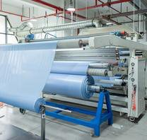
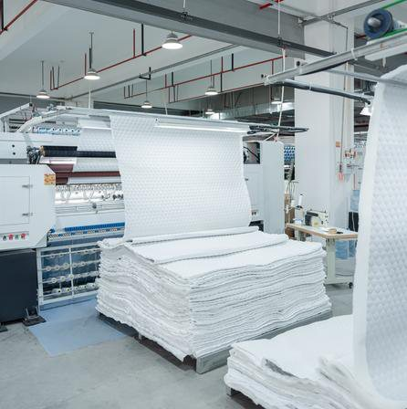
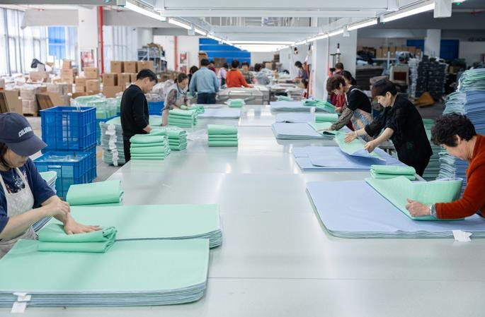
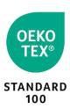

101
101作業場ごとに
パッドができるまで
10101
当社の生産拠点
ラミネート、裁断、キルティング、縫製、検品、梱包、そして倉庫と出荷まで、すべて一か所で行います。拠点が一つなので品質管理も一つ、リードタイムも短くなります。
| 社内工程 | ラミネート、裁断、キルティング、縫製、検品、梱包 |
|---|---|
| 製品 | ベッド用防水シーツ、ペットマット、チェアパッド、おむつ替えマット、大人用エプロン |
| 品質システム | ISO 9001、BSCI 社会監査 |

5002
ラミネート工程
TPU フィルムを連続ラインで裏地にラミネートします。接着強度と防水性がパッドの寿命を左右するため、裁断前にすべてのロールを検査します。
| 防水層 | TPU フィルム 0.025 mm、30 g/m²；または PVC |
|---|---|
| 検査 | ロールごとの耐水圧試験；剥離チェック |
 51
5103
自動裁断
生地を自動裁断機で重ねて裁断するので、出荷品のサイズはすべて仕様書どおりです。
| 公差 | 仕上がり寸法 ±2 cm |
|---|---|
| サイズ | 標準19サイズと任意のサイズ |

5204
キルティング工程
多針キルティング機で表地と吸収芯を縫い合わせます。細かいキルティングで、数百回洗っても芯がよれません。
| 柄 | 標準柄12種またはロゴ入りオリジナルキルト |
|---|---|
| 吸水芯 | 200 / 230 / 270 / 340 g/m² |

5305
縫製ライン
縁はダブルステッチのバイアステープで仕上げ、持ち手、差し込みウイング、ラベルもここで縫い付けます。
| 縁 | バイアス縁取り、二重縫い、角丸 |
|---|---|
| 付属品 | 持ち手（4・6・8個）、ウイング、織りネーム、洗濯表示 |
 105
10506
縫製工場の全景
複数の縫製ラインが並行して稼働するので、複数のタイプ・サイズ・色を含む混載注文も同時に生産できます。
| 混載注文 | 1注文で複数のタイプ・サイズ・色 |
|---|
 54
5407
検品
完成品は梱包前にサイズ、縫い目、縁取り、汚れ、防水性を検査します。最終検査は AQL 2.5 で、第三者検品も歓迎します。
| 工程内 | サイズ・縫い目・縁取りの検査 |
|---|---|
| 最終 | 注文ごとの AQL 2.5 報告書 |
 55
5508
梱包と倉庫
パッドはご指定の仕様でたたみ、包装し、ラベルを貼って輸出用カートンに詰めます。数量違いを防ぐため、全カートンの重量を確認します。
| 包装 | ポリ袋、ヘッダーカード、カラーボックス、FBA ラベル |
|---|---|
| カートン | 輸出用カートン、全数重量チェック |
| 出荷 | FOB / CIF / DDP |
認証・資格
認証書と試験報告書
番号と適用範囲を記載した写しを、ご注文時にお渡しします。

103 104
104提出できる書類
| 生地 | OEKO-TEX® Standard 100 の生地（乳幼児向け製品クラス I） |
|---|---|
| マネジメント | ISO 9001 品質マネジメントシステム；BSCI 社会監査 |
| 化学物質試験 | REACH SVHC 試験；乳幼児製品の CPSIA 試験（米国） |
| 性能 | 50・100・300回洗濯後の耐水圧試験（ISO 811）；洗濯耐久性（ISO 6330）；グレード別吸収量 |
| 最終検査 | 注文ごとの AQL 2.5 報告書；第三者検品歓迎 |
洗える防水シーツのラインを立ち上げませんか？
販売市場、サイズ、数量をお知らせください。1営業日以内に仕様書と数量別価格をお送りします。